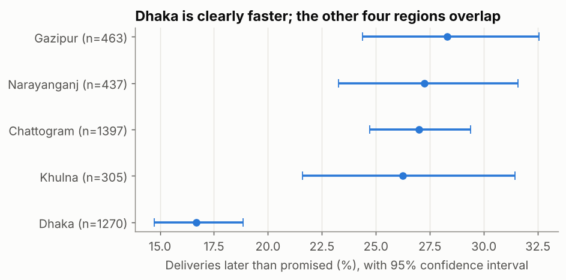

Statistics Part 2: Correlation and Confidence Intervals
Measure relationships with Pearson and Spearman correlation without being fooled by outliers, and report means, proportions and medians with 95% confidence intervals — including the bootstrap.
Before you start
- data-science-scripts.zipAll 21 Phase 2 lesson scripts (NumPy to research thinking), shared chart style, data folder and solutions · 230 KB
- orders_2025.csv4,246 clean orders for 2025 (synthetic, fixed seed): region, segment, channel, product, price, discount, status, delivery days, revenue · 472 KB
What is it?
- Correlation is one number (−1 to +1) for how consistently two variables move together. Pearson r measures straight-line relationships; Spearman ρ (rho) works on ranks, so it handles skew and outliers.
- A confidence interval (CI) gives a range of plausible values for something you estimated from a sample: “mean delivery time 5.26 days, 95% CI 4.96 to 5.55”.
Why it matters at work
A single number without uncertainty invites over-reaction: “Khulna’s late rate is 26%, Gazipur’s is 28%, so Gazipur is worse!” Confidence intervals show when a difference is real and when it’s noise, and they’re expected in any serious analysis, A/B test or model evaluation.
The script is 12_stats_correlation_ci.py.
Part 1: correlation done right
Within one product, quantity and revenue are tightly linked
The EDA lesson found quantity vs revenue ≈ 0 across all products (a mix effect). Within one product it’s a different story:
twill = net[net["product"] == "Cotton Twill"]
r, p_r = stats.pearsonr(twill["quantity"], twill["revenue"])
rho, p_rho = stats.spearmanr(twill["quantity"], twill["revenue"])
print(f"Cotton Twill orders: {len(twill)} | Pearson r = {r:.3f} (p = {p_r:.1e}) | Spearman rho = {rho:.3f}")
print(f"r squared = {r**2:.3f}: quantity explains {r**2:.1%} of the variation in revenue")Cotton Twill orders: 348 | Pearson r = 0.999 (p = 0.0e+00) | Spearman rho = 0.999
r squared = 0.998: quantity explains 99.8% of the variation in revenue- r² (r squared) is the share of the variation in one variable that a straight line on the other explains.
- The p-value tests “is the true correlation zero?”. With hundreds of rows, even tiny correlations get tiny p-values, so judge the size, not just the p-value.
One extreme point can invent a correlation
rng = np.random.default_rng(7)
x = rng.normal(0, 1, 30)
y = rng.normal(0, 1, 30)
print(f"30 random points: Pearson {stats.pearsonr(x, y)[0]:.2f} | Spearman {stats.spearmanr(x, y)[0]:.2f}")
x2, y2 = np.append(x, 8), np.append(y, 8)
print(f"plus one extreme point: Pearson {stats.pearsonr(x2, y2)[0]:.2f} | Spearman {stats.spearmanr(x2, y2)[0]:.2f}")30 random points: Pearson -0.12 | Spearman -0.14
plus one extreme point: Pearson 0.72 | Spearman -0.03Thirty random, unrelated points, plus one outlier, and Pearson jumps to 0.72. Spearman barely moves. Always plot before you believe a correlation, and prefer Spearman for skewed business data.
| Size of |r| | Rough description |
|---|---|
| < 0.1 | Negligible |
| 0.1–0.3 | Weak |
| 0.3–0.5 | Moderate |
| > 0.5 | Strong |
These bands are only a guide: in some fields 0.2 matters a lot; in others 0.8 is disappointing.
Part 2: confidence intervals
Why an interval?
Our 2025 orders are a sample of how the business behaves. Next year’s orders will differ a little. A 95% CI is built so that, if we repeated the sampling many times, about 95% of such intervals would contain the true value. In practice: a range of plausible values. Its width depends on the spread of the data and the sample size (the standard error, std ÷ √n).
CI for a mean (t-interval)
khulna = delivered.loc[delivered["region"] == "Khulna", "delivery_days"]
m, se = khulna.mean(), stats.sem(khulna)
lo, hi = stats.t.interval(0.95, df=len(khulna) - 1, loc=m, scale=se)
print(f"Khulna delivery days: n = {len(khulna)}, mean {m:.2f}, 95% CI {lo:.2f} to {hi:.2f}")Khulna delivery days: n = 305, mean 5.26, 95% CI 4.96 to 5.55
Only 30 orders: mean 5.43, 95% CI 4.43 to 6.43With 305 orders the interval is ±0.3 days; with only 30 it’s ±1 day, about 3× wider (√(305/30) ≈ 3.2). More data, narrower interval.
CI for a proportion (Wilson)
late = delivered["delivery_days"] > delivered["promised_days"]
res = stats.binomtest(int(late.sum()), len(late))
ci = res.proportion_ci(confidence_level=0.95, method="wilson")
print(f"Late deliveries: {late.sum()} of {len(late)} = {late.mean():.2%}, 95% CI {ci.low:.2%} to {ci.high:.2%}")Late deliveries: 919 of 3872 = 23.73%, 95% CI 22.42% to 25.10%Almost 1 in 4 deliveries miss the promised date. The Wilson method works well even for small samples or rates near 0% or 100%, where the simple “p ± 1.96 × SE” formula breaks down.
Compare groups with their CIs
region n late_pct lo hi
Dhaka 1270 16.7 14.7 18.8
Khulna 305 26.2 21.6 31.4
Chattogram 1397 27.0 24.7 29.4
Narayanganj 437 27.2 23.3 31.6
Gazipur 463 28.3 24.4 32.6
- Dhaka is clearly better: its interval (14.7–18.8%) doesn’t overlap any other region’s.
- The other four (26–28%) overlap heavily: ranking them would be over-reading noise. Khulna’s interval is widest because it has the fewest deliveries.
- Overlapping intervals don’t strictly prove “no difference” (the A/B testing module shows the proper test), but non-overlap is a strong sign of a real one.
CI for anything: the bootstrap
There’s no simple formula for the CI of a median. The bootstrap resamples the data with replacement thousands of times, recomputes the statistic each time, and takes the middle 95% of the results:
rev = net["revenue"].to_numpy()
boot = np.array([np.median(rng.choice(rev, size=len(rev), replace=True)) for _ in range(5000)])
print(f"median order value {np.median(rev):.0f}, bootstrap 95% CI {np.percentile(boot, 2.5):.0f} "
f"to {np.percentile(boot, 97.5):.0f}")median order value 1060, bootstrap 95% CI 1023 to 1099The bootstrap works for medians, percentiles, ratios and model
scores. (scipy.stats.bootstrap does the same with better
methods built in.)
How to report it
Median order value was 1,060 (95% CI 1,023–1,099). 23.7% of deliveries were late (95% CI 22.4–25.1%). Dhaka’s late rate (16.7%) is clearly lower than the other regions (26–28%, which can’t be separated with this data).
Common mistakes
| Mistake | What happens | Fix |
|---|---|---|
| Believing a correlation without a plot | One outlier creates a “strong” relationship | Scatter plot + Spearman |
| Judging by p-value alone | Trivial correlations look “significant” with big data | Report the size (r, r²) and a CI |
| “95% chance the true value is in this interval” | A common, technically wrong wording | Say “a range of plausible values”; the 95% is about the method |
| Ranking groups whose CIs overlap | Acting on noise | Show CIs; test the difference properly |
| Normal-formula CIs for skewed medians or tiny samples | Wrong intervals | Bootstrap; Wilson for proportions |
Try it yourself
Task: Compute a 95% CI for the mean order revenue of Garment Factories and of Retailers. How wide is each, and why is one wider relative to its mean?
Show the solution
for seg in ["Garment Factory", "Retailer"]:
s = net.loc[net["segment"] == seg, "revenue"]
lo_s, hi_s = stats.t.interval(0.95, df=len(s) - 1, loc=s.mean(), scale=stats.sem(s))
print(f"{seg:16s} n={len(s):4d} mean {s.mean():7.0f} 95% CI {lo_s:7.0f} to {hi_s:7.0f}")Garment Factory n=2594 mean 1632 95% CI 1570 to 1695
Retailer n= 256 mean 324 95% CI 282 to 367Quick quiz
1. 30 unrelated points plus one extreme point give Pearson 0.72 and Spearman −0.03. What should you conclude?
- There’s a strong relationship
- The outlier creates the Pearson value; there’s no real relationship
- Spearman is broken
Show answer
B.2. You quadruple the sample size. Roughly what happens to the width of a CI for the mean?
- It halves
- It quarters
- It stays the same
Show answer
A. Width shrinks with √n: √4 = 2.3. Which method gives a CI for a median without a formula?
- The t-interval
- The bootstrap
- Pearson correlation
Show answer
B.Summary
- Pearson = straight-line relationships; Spearman = rank-based, robust. Plot first; report size (r, r²), not just p-values.
- A 95% CI is a range of plausible values; width depends on spread and √n.
- Means: t-interval. Proportions: Wilson. Anything else (medians, percentiles): bootstrap.
- Compare groups with their CIs before ranking them.
Job-ready check
Interview question: “Region A’s late rate is 26%, region B’s is 28%. Is B worse?”
Strong answer: “Not necessarily. I’d put a confidence interval on each rate: with a few hundred deliveries each, the intervals are about ±4 percentage points and overlap heavily, so the 2-point gap is within noise. I’d say they perform similarly, and a formal two-proportion test or more data would be needed to separate them.”
Mini project: Make a one-page “KPIs with uncertainty” table: median order value, cancellation rate and late-delivery rate, each overall and per segment, with 95% CIs (bootstrap for medians, Wilson for rates).
AI Mentor Prompt
Paste this into ChatGPT, Claude, Gemini, or another capable assistant to turn this tutorial into an interactive mentoring session.
You are my hands-on Python, statistics and data-science mentor.
I am currently studying:
"Statistics Part 2: Correlation and Confidence Intervals"
My level:
Intermediate
Teach me this topic interactively rather than giving me a long lecture.
Use this sequence:
1. Check what I already understand with one short diagnostic question.
2. Explain the concept in simple language and give me the mental model first.
3. Give me one small task using code, SQL, configuration, data, or architecture as appropriate.
4. Wait for my attempt before showing a complete solution.
5. Review my work and explain both what is correct and what needs improvement.
6. Help me debug errors step by step instead of immediately replacing my work.
7. Increase the difficulty gradually and connect each new step to the previous one.
8. Relate what I am learning to real professional data/AI engineering work.
9. Ask me to explain an important decision in my own words so you can check my understanding.
10. At the end, ask me to build or modify one small feature independently.
Important rules:
- Do not do the entire exercise for me unless I explicitly ask.
- Explain unfamiliar terminology before using it heavily.
- Prefer current, production-relevant practices over outdated shortcuts.
- Distinguish clearly between concepts, tool-specific behaviour, and optional alternatives.
- If a technical fact, API, syntax, version, or best practice may have changed, verify it against current official documentation before teaching it.
- Never invent command output, test results, benchmark numbers, cloud behaviour, or data results.
- If something cannot be executed in the current environment, say so and give me the exact command or verification step I should run.
- Keep me actively coding, querying, configuring, reasoning, or debugging throughout the session.
- When useful, work from the tutorial practice files (data-science-scripts.zip, orders_2025.csv) instead of inventing unrelated examples.
The concepts I need to master are:
- Correlation
- Confidence intervals
- pearson
- spearman
- r squared
- coefficient of determination
- confidence interval
- 95% confidence interval
Start by asking me one diagnostic question.Free resources to go deeper
Last reviewed: 2026-10-09